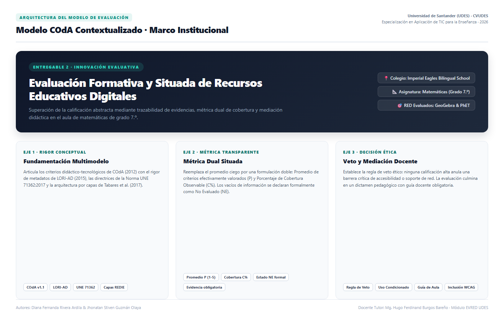

Informe de Implementación · Entregable 2
01 / 14
Modelo COdA Contextualizado
Evaluación sistemática de dos recursos educativos digitales para la toma de decisiones pedagógicas informadas en el aula de matemáticas de grado 7.º.
Autores: Diana Fernanda Rivera Ardila & Jhonatan Stiven Guzmán Olaya
Docente Tutor: Mg. Hugo Ferdinand Burgos Bareño
Universidad de Santander (UDES) · Centro de Educación Virtual CVUDES · 2026
Revisión exploratoria experta; aplicación situada de instrumentos formativos.
